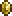

The Guardian is a prehardmode item obtained by beating the dungeon guardian.
It has a 1% drop chance from dungeon gaurdians.
Its best modifier is Legendary.
|
the guardian 
Statistics Type Weapon Damage 75 Knockback 0 (No Knockback) Critical chance 0% Use time 8 (Insanely Fast) Sell 1  |